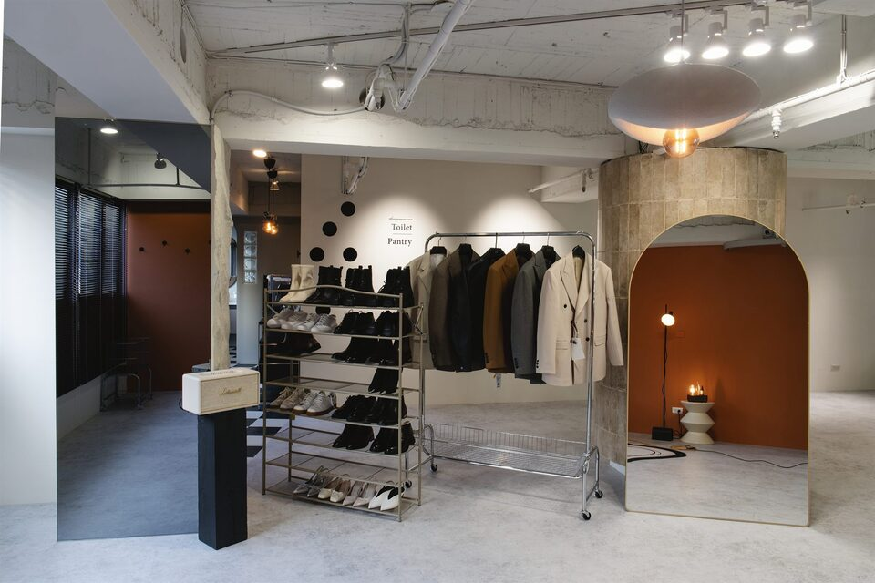
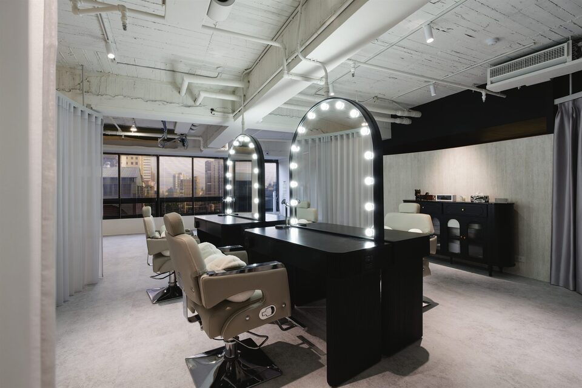
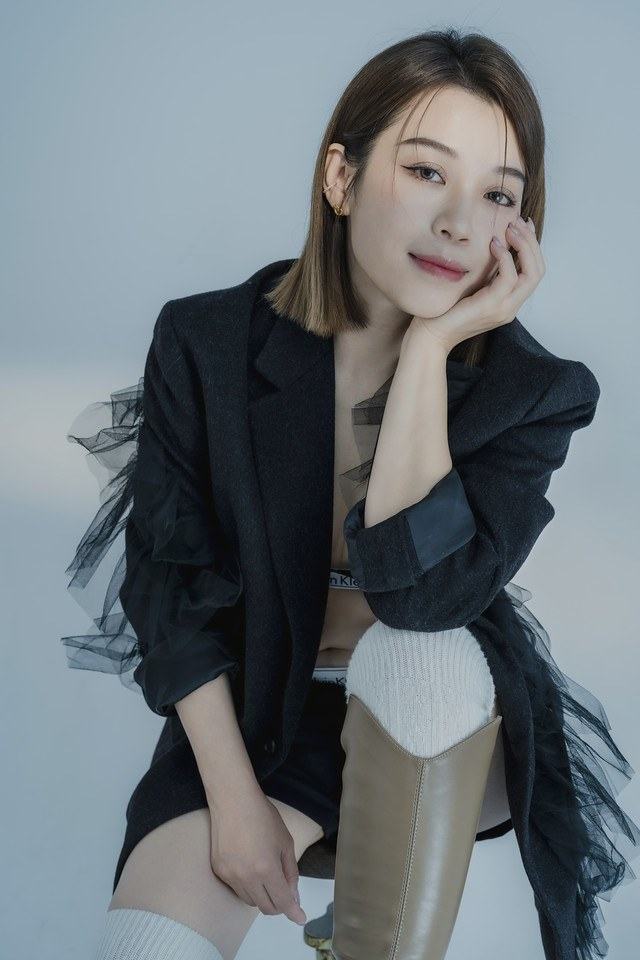

Selected Works精選作品
每一組影像，都是品牌定位被看見的開始。
從商務形象到個人品牌，多元風格——每一組影像皆由 CHUN.EN 完成整套服務：形象定位、妝髮造型至拍攝。


CHUN.EN·Commercial Image Strategy·Taichung
Make expertise visible, clear, and trusted.
專業工作者・品牌主理人・企業領導者・高能見度專業人士
我們不是把多個服務綁在一起，
One Strategy · Three Disciplines · One Coherent Image
而是讓每一項專業，都從同一個定位出發。
Is This You需求辨識
你可能正處於以下階段：
CHUN.EN 從角色與商業情境出發，將零散的服裝、妝髮與影像選擇，整理成一套可持續使用的視覺決策系統。
CHUN.EN Signature旗艦企劃
以未來角色為起點，以商業需求為依據。
從職業定位、使用情境到品牌溝通，整合形象定位、服裝規劃、妝髮造型與影像拍攝。
在按下快門之前，我們已經完成角色、服裝、妝髮與影像用途的整體規劃——讓每一張照片都有明確目的，而非只是留下當下的樣子。
Selected Works精選作品
從商務形象到個人品牌，多元風格——每一組影像皆由 CHUN.EN 完成整套服務：形象定位、妝髮造型至拍攝。
The Method合作方法
從職業角色、受眾與使用情境出發，釐清你要傳達的專業訊號。
建立服裝、色彩與風格的決策邏輯——一套可長期沿用的視覺語言。
妝髮與造型於拍攝日一次到位，乾淨、穩定、經得起鏡頭與時間。
多場景拍攝與精修，依官網、社群、簡報與媒體規格交付。
提供應用建議與後續支援，讓影像真正進入你的工作現場。
Three Disciplines三大專業模組



Founder & Brand Director創辦人暨品牌主理人
形象顧問・服裝設計師・妝髮造型師・品牌視覺定位顧問
Zoey 的工作並不是在三種專業之間轉介，而是以同一份策略擔任整體形象的總導演。她從客戶的職業角色、個人氣質、使用場景與商業目標出發，統整服裝、妝髮、影像企劃與後端應用，讓每一次公開露出都維持一致、清楚且具有辨識度的專業訊號。
從第一次對談到最後一次交付，你面對的始終是同一份理解。
認識 Zoey 與 CHUN.EN 方法 →Client Voices客戶評論
所有評論皆來自 Google Maps，由實際接受過服務的客戶撰寫。
原本自己不懂穿搭，透過 Zoey 的企劃協助定位，拍攝出自己未來 3–5 年想要的樣子，而不是現在自己的狀態而已。
★★★★★吳竹右開拍前細心規劃與討論，過程中的專業妝髮及動作指導，讓我獲得一系列專業、優質的形象照，也提升客戶對我的信任。
★★★★★劉煒達｜亞森銧國際法律事務所 創辦人・律師眼光超級精準，一眼就能抓住每個人的優勢。事前的深度訪談非常有感，是真正由內而外地在做形象打造。
★★★★★Claire｜商戰CXO不只是把人變好看，而是把每個人身上的氣質與定位精準放大。
★★★★★陳萱恩從內在實力到外在顯化——曾經的卡點，是實力與形象的「視差」，在這裡被重新對齊。
★★★★★潘盛岳Positioning before production.
用 LINE 告訴我們你的職業角色、使用情境與目前困擾，CHUN.EN 將依需求建議最適合的合作方式。企業與機構合作請走企業合作。